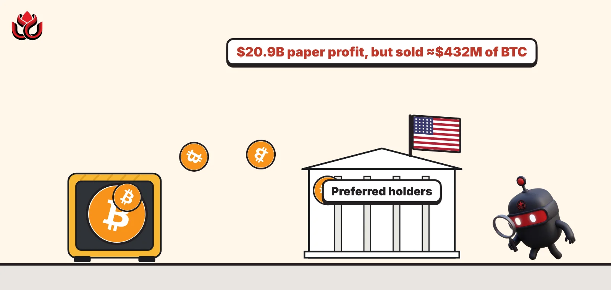

Strategy booked a record $20.9 billion profit. So why did it sell $432 million of bitcoin?
The biggest corporate bitcoin holder had its best quarter ever on paper. But each share is now backed by 3.7% less bitcoin than in January, it spent $2 billion propping up its own preferred stock, and its CFO is leaving.

Key points
- Strategy reported Q3 2026 operating income of $20.91 billion, almost all of it a paper gain on its bitcoin.
- It holds 848,517 BTC, but its own bitcoin-per-share measure is down 3.7% this year after about $431.8 million of bitcoin sales.
- It has spent about $2.04 billion buying back STRC preferred stock; CFO Andrew Kang steps down on November 5.
A record quarter on paper
Strategy, the software company turned bitcoin holder, made $20.91 billion in operating income in the three months through September 30, against $3.89 billion a year earlier, it reported on October 29, 2026, after the US market close. Almost all of it came from a $20.91 billion gain on its digital assets. Outgoing CFO Andrew Kang said the quarter's operating income was "the largest ever in Strategy's history."
Net income was $19.53 billion, or $44.75 per diluted share. After $419.6 million of preferred dividends, $19.12 billion was left for common shareholders. The actual software business is small by comparison: revenue fell 3% to $125.4 million.
As of October 25, Strategy held 848,517 BTC bought for $64.02 billion, an average of about $75,446 per coin. At roughly $81,200 per bitcoin (the October 23 price the company used), the stack was worth $68.90 billion.
The catch: less bitcoin per share
That profit is an accounting gain. Strategy's favorite scorecard tells a different story. Its BTC Yield, which tracks how much bitcoin backs each diluted share, stands at minus 3.7% for 2026. In coin terms the company reports a BTC Gain of minus 24,947 BTC, or minus $2.03 billion, so far this year.
Two things drove that. First, the company has sold about $431.8 million of bitcoin in 2026 to pay preferred dividends and fund buybacks of its STRC preferred stock. Second, it kept issuing common stock while buying only small amounts of bitcoin.
The weekly filings show the slowdown. In the week of October 5 to 11, Strategy bought 250 BTC for $21.5 million, an average of $86,194 each, but spent $192.4 million buying back 1,932,145 STRC shares. The following week it added 267 BTC for $22.1 million at $82,900 each, funded almost entirely by $22.0 million of common stock sales, plus $0.1 million of cash.
For the year, Strategy has bought back 20,980,508 STRC shares for about $2.04 billion at an average of $97.39, roughly 2.6% below the $100 stated amount. About $956.7 million of buyback authority remains.
Where the money went in 2026
Strategy has raised $21.23 billion of equity in 2026, which it says makes it the fourth-largest US equity issuer this year. About $5.41 billion of that came through at-the-market (ATM) sales in the third quarter. The main money flows, as reported by the company:
Strategy in 2026: where the money went
US$ billion
Daily dividends and a $4.8 billion cushion
Shareholders approved a switch of the four preferred stocks to daily dividends on October 28, CEO Phong Le said in the results release. STRC moved to daily payments on November 1, 2026, with STRF, STRK and STRD following on January 1, 2027. The STRC rate stays at 12.00% a year. Le linked the change to a tokenized financial system that runs every day of the year, since daily dividends accrue on weekends and holidays too.
Strategy now holds a USD Reserve of $4.83 billion plus $242.4 million of other cash. The company says total dollar assets of $5.07 billion cover about 3.4 years of preferred dividends and interest. It also expects its preferred payouts to be treated as non-taxable return of capital for 10 years or more, because it does not expect to have positive accumulated earnings and profits. It notes this could change.
Le framed the STRC buybacks as repair work, saying they showed the company's commitment to bringing the preferred stock back to health. The release says STRC still trades below its $100 stated amount.
A new CFO
The same release said Andrew Kang will step down as CFO on November 5, 2026, and stay on as an advisor until December 31, after four and a half years in the role. Phong Le takes over as principal financial officer in the meantime. Reza Virasteh, now executive vice president of operations, becomes CFO on January 1, 2027, and will share the principal financial officer role with Le, who keeps charge of the bitcoin strategy's finances.
The release also pointed to a 76% rise in the MSTR share price during the third quarter.
Timeline
Strategy reports 250 BTC bought and $192.4 million of STRC repurchased in the prior week
Weekly filing shows 267 BTC bought for $22.1 million; holdings reach 848,517 BTC
Shareholders approve daily dividends on the preferred stocks
Q3 results published: $20.91 billion operating income, CFO transition announced
STRC starts paying dividends daily
Andrew Kang steps down as CFO
Reza Virasteh becomes CFO; STRF, STRK and STRD move to daily dividends
LC Insight analysis
This section is our reading of the facts above, not a statement of fact.
- We think the $20.9 billion profit says more about the bitcoin price on September 30 than about the business. The number Strategy itself tells investors to watch, bitcoin per share, went backwards this year.
- Selling bitcoin to prop up a preferred stock is a real shift. STRC is now the center of the model: if it holds near $100, Strategy can raise cash through it again; if it slips, expect more bitcoin sales.
- Daily dividends and talk of a 24/7 tokenized market show Strategy wants its preferred shares to feel like yield-paying digital cash. That pitch gets tested the first time bitcoin falls hard while the 12% coupon keeps running.
What's next
- Whether weekly bitcoin purchases grow beyond the 250 to 270 BTC range
- STRC's price relative to its $100 stated amount
- Any further bitcoin sales disclosed in 8-K filings
- The CFO handover on November 5 and January 1
Disclaimer. This article is based on public information and the sources listed below as of the update time shown. It is for information only and is not investment, legal or tax advice. Figures may change as companies and authorities publish new data.